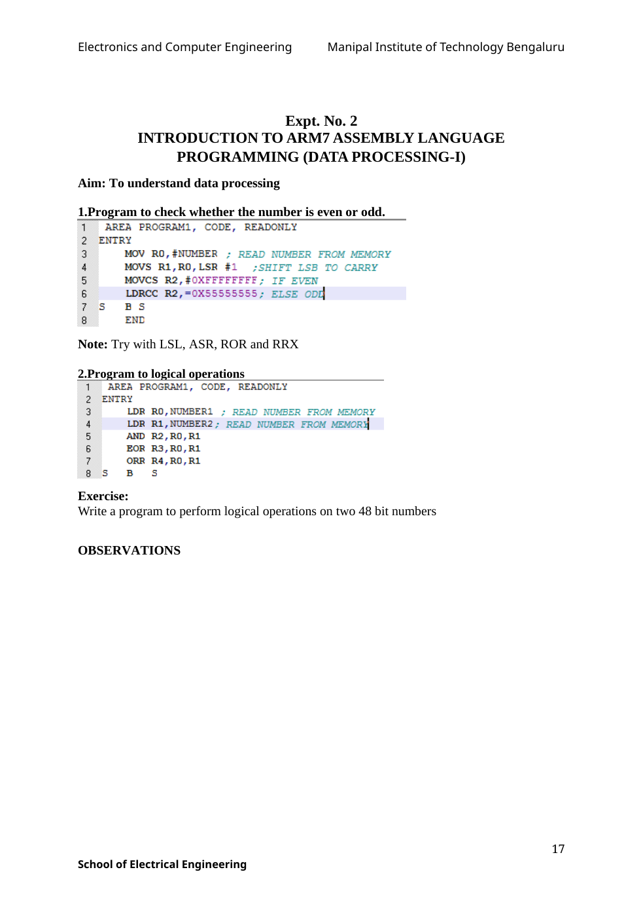

Copyable text transcription
OCR-generated from the original manual page. Check register names, labels, constants and punctuation against the reference image before using.
Electronics and Computer Engineering Manipal Institute of Technology Bengaluru
Expt. No. 2
INTRODUCTION TO ARM7 ASSEMBLY LANGUAGE
PROGRAMMING (DATA PROCESSING-I)
Aim: To understand data processing
1.Program to check whether the number is even or odd.
1 AREA PROGRAM1, CODE, READONLY
2 ENTRY
3 MOV RO,#NUMBER ; READ NUMBER FROM MEMORY
4 MOVS R1,RO,LSR #1 ;SHIFT LSB TO CARRY
5 MOVCS R2,#OXFFFFFFFF; IF EVEN
6 LDRCC R2,=0X55555555; ELSE opy
7 5S BS
8 END
Note: Try with LSL, ASR, ROR and RRX
2.Program to logical operations
1 AREA PROGRAM1, CODE, READONLY
2 ENTRY
3 LDR RO,NUMBER1 ; READ NUMBER FROM MEMORY
4 LDR R1,NUMBER2; READ NUMBER FROM MEMORY
5 AND R2,RO,R1
6 EOR R3,RO,R1
7 ORR R4,RO,R1
8s B Ss
Exercise:
Write a program to perform logical operations on two 48 bit numbers
OBSERVATIONS
17
School of Electrical EngineeringView original manual page (reference)
